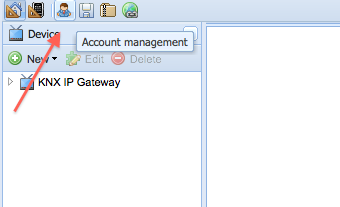

Hi,
I finally got the complete chain (EIBD, ORB, and Android app) to work together, and are able to turn lights on and off.
However, when trying to use a slider to control a dimmer I am not able to get the Android app to send a dimmer value.
If I access the REST interface directly with a browser it seems to work, i.e. I can do this:
http://localhost:8080/controller/rest/control/18/50
To set my dimmer (ID==18) to 50%.
But, the Android app seems to always supply 0 for the value.
I have traced the communication between the ORB and the Android app with wireshark, and the app always sends ..../st/control/18/0
Anybody else that has got this to work?
Regards,
Trond
{kind=link}
|
Typo above, what I meant was of course that the Android app always sends: http://<ipaddr>:8080/controller/rest/control/18/0 Regards, |
|
Hello Trond, Thanks for reporting this (and congrats on getting your installation started and running)... I will check if I can reproduce the slider issue on Android. Please keep us posted on your progress, sounds interesting. – Juha |
|
Hey Trond, These should work. Can you post your panel.xml for the slider here? It should have min/max values configured. The min/max values are derived from the range or level sensor you've bound to the slider (so either 0 to 100 or arbitrary range). Thanks for helping us debug these issues. – Juha |
|
Yeah, this is the direction I went in as well. I looked at slider.java in the android panel src, and found that it tried to set min and max values. I then looked in the panel.xml and controller.xml, but were not able to find any min or max definitions. Actually, in the .xml it does not look like I have any sensor bound to the slider at all, although in the Designer GUI it does. So, it seems there is something missing in my config. Will try to debug more on the issue later today. |
|
Something seems to be seriously out of whack with the XML files that I download from the Designer. I have tried adding a new sensor, but even if it is visible in the GUI, it does not manifest itself in the downloaded XML. If you want to have a look the account I am using is TrondK2 /Trond |
|
A small update on the issue. Got the slider to mostly work now. Created a new account for the Designer, and made a pretty minimal config with just two commands, a slider, and a range sensor. Then created a panel with just the slider and a label. At first the commands did not make it into the controller.xml, but after fiddling around in the Designer a bit they showed up. Must say that I am tempted to just ignore the Designer, and create the controller.xml and panel.xml files manually, as the Designer seems less than stable. Have not got the sensor to work, always get this exception in the controller: Controller2010-11-08 19:01:05,905 ERROR HTTP\-Thread\-1 org.openremote.controller.rest.StatusCommandRESTServlet.doPost(92) | CommandException occurs 9 is the ID of my sensor. Get the same exception when I do "http://localhost:8080/controller/rest/status/9" in firefox. I'm not 100% sure I got the sensor set up correctly I must admit. I have defined it as a range sensor, with group address the same as for the dimmer command, "status" as the knx command, and 5.001 as the DPT. Does this sound sane? Or should I use the group address which the dimmer sends as feedback instead? does not seem to make a difference actually... Also, is there a way to get the "label" UI element to display the value read from the sensor? It seems it can be bound to the sensor, but the text never changes. Maybe because the sensor never gives any reply, ref. error above. Oh well, will debug more tomorrow, and maybe read some source code to try to better understand how this stuff is connected together. Regards, |
|
Can you share your account, from the top  And I will take a look. email juha at openremote org |
|
Yeah the label wouldn't work, it's not getting the status value updated for whatever reason. Not sure yet where the issue might be, could be as low as the KNX protocol implementation, I don't have 5.001 to test with. But the steps you describe sound about correct. |
|
Ok, have shared both the TrondK2 account, which produces non-working XML, and also my new TrondK3 account which now seems to produce working XML files, in case you want/need to compare. /Trond |
|
Ok, thanks. I think I see the bug in the first one – the dim sensor ended up there twice, with two ids (9 and 10) although with same name, and the label and slider actually link to two different sensors with different ranges too (0-100 and 0-256). There is a bug in the currently deployed designer where the underlying model gets messed up when deleting and sometimes just creating sliders, and it shows duplicates. I always just worked around it when I spotted it with a logout/login (its buggy in the memory only, the underlying database seemed to update correctly). There should be a fix for it but I haven't verified or deployed it yet online. Think you just hit it. Will look at the other one next. <sensors> <sensor id="9" name="DimSensor" type="range"> <include type="command" ref="12" /> <min value="0" /> <max value="255" /> </sensor> <sensor id="10" name="DimSensor" type="range"> <include type="command" ref="12" /> <min value="0" /> <max value="100" /> </sensor> </sensors> They reference the same read command but the sensor should appear only once (you intended to link both UI components to same sensor) and the ranges are different so it looks messed up. If you wanna try hacking it, just delete one of them, and link both your label and slider to same sensor reference. <screens> <screen id="3" name="Starting Screen"> <absolute left="51" top="155" width="198" height="44"> <slider id="6" vertical="false" passive="false"> <link type="sensor" ref="10" /> <min value="0" /> <max value="100" /> </slider> </absolute> <absolute left="84" top="315" width="150" height="50"> <label id="8" fontSize="14" color="#FFFFFF" text="Label Text"> <link type="sensor" ref="9" /> </label> </absolute> </screen> </screens> So yeah at some point in the designer the internal data model got messed up. |
|
Fixed the account for you, it should produce correct XML now for you. <?xml version="1.0" encoding="UTF-8"?> <openremote xmlns="http://www.openremote.org" xmlns:xsi="http://www.w3.org/2001/XMLSchema-instance" xsi:schemaLocation="http://www.openremote.org http://www.openremote.org/schemas/panel.xsd"> <panels> <panel id="1" name="TestPanel"> <include type="group" ref="2" /> </panel> </panels> <screens> <screen id="3" name="Starting Screen"> <absolute left="51" top="155" width="198" height="44"> <slider id="6" vertical="false" passive="false"> <link type="sensor" ref="9" /> <min value="0" /> <max value="255" /> </slider> </absolute> <absolute left="84" top="315" width="150" height="50"> <label id="8" fontSize="14" color="#FFFFFF" text="Label Text"> <link type="sensor" ref="9" /> </label> </absolute> </screen> </screens> <groups> <group id="2" name="Default Group"> <include type="screen" ref="3" /> </group> </groups> </openremote> <?xml version="1.0" encoding="UTF-8"?> <openremote xmlns="http://www.openremote.org" xmlns:xsi="http://www.w3.org/2001/XMLSchema-instance" xsi:schemaLocation="http://www.openremote.org http://www.openremote.org/schemas/controller.xsd"> <components> <slider id="6"> <setValue> <include type="command" ref="10" /> </setValue> <include type="sensor" ref="9" /> </slider> <label id="8"> <include type="sensor" ref="9" /> </label> </components> <sensors> <sensor id="9" name="DimSensor" type="range"> <include type="command" ref="11" /> <min value="0" /> <max value="255" /> </sensor> </sensors> <commands> <command id="10" protocol="knx"> <property name="command" value="Dim" /> <property name="groupAddress" value="1/1/7" /> <property name="DPT" value="5.001" /> </command> <command id="11" protocol="knx"> <property name="command" value="status" /> <property name="groupAddress" value="1/1/7" /> <property name="DPT" value="5.001" /> </command> </commands> <config> <property name="controller.roundrobin.tcpserver.port" value="20000" /> <property name="multicast.address" value="224.0.1.100" /> <property name="controller.roundrobin.multicast.port" value="10000" /> <property name="multicast.port" value="3333" /> <property name="controller.groupname" value="floor20" /> <property name="Macro.IR.Execution.Delay" value="500" /> <property name="controller.roundrobin.multicast.address" value="224.0.1.200" /> <property name="lircd.conf.path" value="/etc/lircd.conf" /> <property name="controller.groupmember.autodetect.on" value="true" /> <property name="webapp.port" value="8080" /> <property name="copy.lircd.conf.on" value="true" /> <property name="irsend.path" value="/usr/local/bin/irsend" /> <property name="resource.upload.enable" value="true" /> <property name="controller.applicationname" value="controller" /> </config> </openremote> Curious to know if you can get it to work – if DPT 5.001 works (I've no hardware to test it) and if the label updates. |
|
Thanks, Have done a little testing this morning, and have some observations. It seems the range need to be 0-100, or at least the max value have to be <= 100, if not I get a controller error whenever the value from the slider exceeds 100: Controller2010-11-09 07:27:07,055 ERROR HTTP\-Thread\-2 org.openremote.controller.rest.ControlCommandRESTServlet.doPost(81) | ControlCommandException occurs This happens even though the range both in controrller.xml and panel.xml are set to 0-255, so it looks like something hard-coded in the controller. I think it hits these lines: static ApplicationProtocolDataUnit createScaling(CommandParameter parameter) if (value < 0 || value > 100) In the ApplicationProtocolDataUnit.java file. After changing the range to 0-100 in both XML files the slider works fine (and the data range sent towards the NX gw is actually 0-255, so I guess % is implied in the range?) The sensor not so much. At startup the ORB seems to create a thread for reading the value, and I can see that it successfully gets a response from the KNX device (I see this in the bus monitor). However, I get the following error from the controller: ============ ADDING SENSOR ID 9 I think the 0x00 seen in that trace is from the read request, and can be ignored. In the busmonitor I see that the value received from the device is 0x5C. I have looked in the documentation for my dimmer device, and it specifies that the DPT for the value actually is 5.001, hence should be 8bit. I have not succeeded in finding the place in the source where the read oommand gets instantiated, but it seems it might not be created with the correct datatype. Regards, |
Ok, reading back to my own documentation: Designer 2.0 - Create KNX Write Command the DIM command indeed implies a LEVEL sensor, not range, so the implicit assumption is range of [0-100] – we'll need to change the sensor type in this case, and see if it clear any of the issues. For scale/dim, the KNX spec does specify the conversion from the wire format 1-byte range 0 to 255 to percentage range of 0 to 100. I'll make that change on your account, will see if that changes anything – it is currently mixing things with LEVEL/RANGE sensors so want to clear that up first. |
|
Ok, can you sync your controller, restart things and see if anything changes. The sensor is LEVEL type now, with implicit range of 0 to 100. |
|
Thanks a lot for the help, Will sync and try again as soon as I'm home after work today. /Trond |
|
Well, have tested again with the updated config, and there is a behavior change, at least. First, now the min/max values for the sensor/slider is missing from both controller.xml and panel.xml again, so the slider always sends 0. After adding the values manually again. the slider works fine. The sensor still struggles though, now the controller complains: Exception in thread "Thread-8" java.lang.Error: Unrecognized datatype for LEVEL sensor: 1.001 A bit strange, since the DPT in the controller.xml specifies 5.001 Have briefly digged a bit around in the code, but have not seen anything strange yet. I assume the read command is buildt by the build() method in the file KNXCommandBuilder.java, which seems to pick the DPT by using the properties from the XML. But maybe the read command from the sensor is not buildt that way at all, what do I know. Have barely started to look at the source, so cant say I have the full overview yet |
|
ok thanks for the update they range should be missing for LEVEL sensor as it is assumed its at 0 to 100 always the rest does sound strange but the min/max should not be needed in xml so that is correct will dig more to see if I can figure out |
|
I'm gonna need to test the slider behavior with mock protocol, just to take the KNX out of the equation so we know what we are chasing at. |
|
But there is nothing in panel.xml to indicate that the sensor type is LEVEL? I assumed that only the panel.xml file was being sent to the android app, but maybe thats a wrong assumption? /Trond |
|
If I want to try to build the controller from source, to be able to add some debug statements, which branch or tag would be best to checkout from SVN? /Trond |
|
Your assumption is correct on panel.xml Slider (on the UI) on the other hand just has a link reference to a sensor (which are all on controller): <slider id="6" vertical="false" passive="false"> <link type="sensor" ref="9" /> <min value="0" /> <max value="255" /> </slider> Slider sensor should be assumed as LEVEL unless it defines min/max in which case its RANGE. Anyway, there's something else going on as it should not be this difficult to get right. |
|
Use the tag 2.0 Alpha 10 : http://openremote.svn.sourceforge.net/svnroot/openremote/tags/project/Controller/Controller_2_0_0_Alpha10/ Appreciate the help. |
|
Stupid question: Earlier I have just downloaded the pre-buildt zip file, unzipped it to a directory, and run it from there. Now, after having checked out the URL you list above, I can build a war file using the command "ant war". I did assume that I could then deploy this into some directory, replacing the controller.war that came with the zip file download, but I can not find any .war file at all. Is there a way to deploy the self-buildt controller into the framework coming with the prebuildt zip file, or am I going about in the completely wrong direction? My experience with JBoss etc is limited, to put it mildly... Btw, I am running all this on Ubuntu 9.10 /Trond |
|
You can unpack the war file and copy it over the controller directory in your downloaded binary: > cd output > jar xf controller.war > rm controller.war > cp -r * ../../Runtime/apache-tomcat-6.0.18/webapps/controller/ Some additional detail: Building OpenRemote 2.0 Developer Releases |
|
Hm, can I assume that copying build/classes from source directory I ran ant in into the webapps/controller/WEB-INF/ directory in the installation from the zip file would do the trick? I guess I will find out |
|
My experience with JBoss is not limited If that makes you feel better |
|
Heh, I have some experiences with teams in China myself, and I have also learned that they do all sorts of strange things for obscure reasons /Trond |
|
I think I might have some progress here, although I might approach this all wrong, given my limited knowledge of the code base. I have added some logging here and there to try to find out where the DPT goes wrong, and found something I thought was strange. In GroupValueRead.java I made this patch:
@ -136,8 +136,10 @@
return ""; // TODO : check how caller handles invalid return values
}
- DataPointType dpt = getAPDU().getDataPointType();
- DataType datatype = getAPDU().getDataType();
+ DataPointType dpt = responseAPDU.getDataPointType();
+ DataType datatype = responseAPDU.getDataType();
Which I thought made senses, since I guess its the response message we want to find the datatype of. And that took care of the original error message mentioned above, and the label on the android app started showing the value reported from the dimmer device! However, after running the slider up and down a few times I got this: Exception in thread "Thread-8" java.lang.Error: Unsigned 8-bit value range is 0\-255, got -80 And then both the label got stuck at the current value again. /Trond |
|
-80 is almost surely a conversion issue between Java's signed types -128 to 127 and the KNX unsigned KNX 8-bit type (0 to 255) So that would be bug somewhere. |
|
That will work too, yes. |
|
Ok, made another crude patch for the out-of-range issue: In knx/ApplicationProtocolDataUnit.java:
@@ -667,7 +668,14 @@
*/
private Unsigned8Bit resolveTo8BitValue(DataPointType.Unsigned8BitValue dpt, int value)
{
- return new Unsigned8Bit(dpt, value);
+ int newvalue = value;
+
+ if (value < 0)
+ {
+ newvalue = 255 + value;
+ }
+
+ return new Unsigned8Bit(dpt, newvalue);
}
With this patch, and the one above, I got both the slider and label to work. Not suggesting that these two patches are the correct fixes, of course, but maybe they can help with narrowing in on the issues. /Trond |